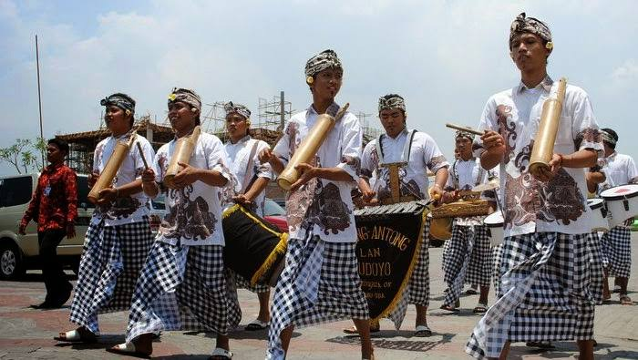
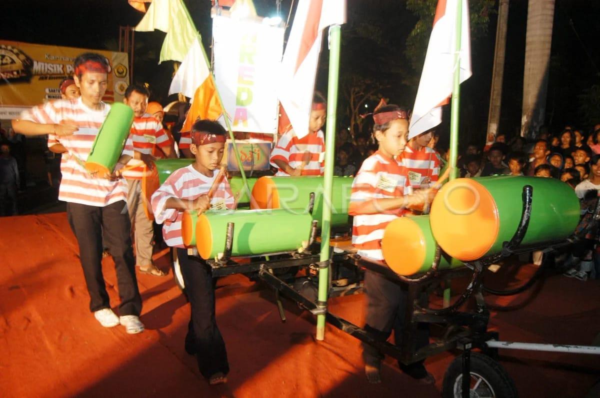
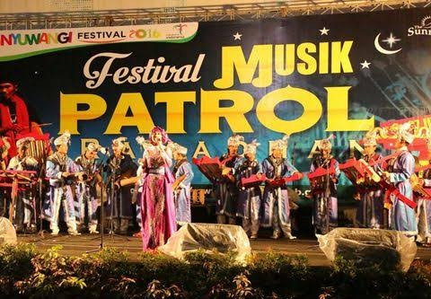
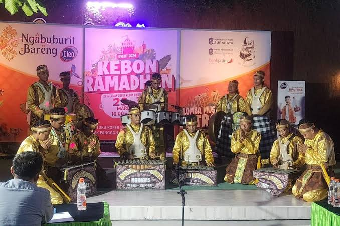
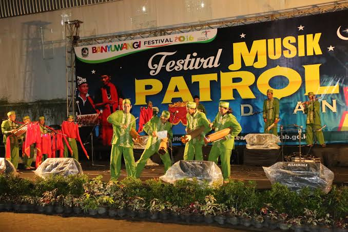

Sejarah
Musik Patrol merupakan kesenian tradisional yang berkembang di Banyuwangi dan beberapa daerah di Jawa Timur. Awalnya, musik ini digunakan oleh masyarakat saat ronda malam (patroli) sebagai alat komunikasi dan penjaga keamanan lingkungan.
Suara kentongan yang dipukul dengan irama tertentu berfungsi sebagai kode atau sinyal antarwarga jika ada bahaya atau gangguan keamanan di malam hari.
Seiring perkembangan zaman, Musik Patrol berubah fungsi dari sekadar alat keamanan menjadi seni pertunjukan yang sering ditampilkan dalam festival budaya, lomba, dan acara masyarakat Banyuwangi.
Makna Filosofis
Musik Patrol melambangkan kebersamaan, gotong royong, dan persatuan masyarakat. Permainan musik yang dilakukan secara berkelompok menunjukkan pentingnya kerja sama, kekompakan, dan rasa peduli terhadap sesama.
Kebersamaan dan Gotong Royong
Irama yang dihasilkan hanya bisa terdengar indah jika dimainkan secara kompak oleh seluruh anggota kelompok, mencerminkan pentingnya persatuan.
️ Rasa Saling Menjaga
Akar sejarahnya dari kegiatan ronda malam mengajarkan nilai kepedulian dan tanggung jawab warga terhadap keamanan lingkungan bersama.
Kreativitas dari Kesederhanaan
Menciptakan musik yang meriah dan kompleks hanya dari bahan bambu sederhana menunjukkan betapa tingginya kreativitas masyarakat Banyuwangi.
Prosesi Pertunjukan
Musik Patrol dimainkan secara berkelompok menggunakan kentongan bambu sebagai alat utama. Pertunjukan biasanya diiringi alat musik lain seperti kendang, gong, dan kempul.
1. Pembentukan Kelompok
Musik Patrol dimainkan secara berkelompok, biasanya terdiri dari 10-20 orang atau lebih, tergantung ukuran kentongan dan kompleksitas irama.
2. Penyusunan Irama
Para pemain memainkan irama yang kompak dan energik. Setiap kentongan memiliki nada yang berbeda-beda sesuai ukuran dan ketebalan bambu.
3. Pertunjukan
Pertunjukan sering dilakukan sambil berjalan (parade) atau di atas panggung. Suasana yang diciptakan sangat meriah dan menghibur.
Alat Musik yang Digunakan
- Kentongan bambu: Alat utama dengan berbagai ukuran untuk menghasilkan nada berbeda.
- Kendang: Pengatur tempo dan ritme utama.
- Gong & Kempul: Memberikan aksen dan penegas ketukan.
- Tamborin: Menambah variasi ritme dan kemeriahan.
Fakta Menarik
Berawal dari Ronda Malam
Fungsi awalnya sangat praktis, yaitu sebagai alat komunikasi dan penjaga keamanan lingkungan saat malam hari.
Pembangun Sahur
Dahulu, Musik Patrol juga digunakan untuk membangunkan warga saat sahur di bulan Ramadhan dengan keliling desa.
Bahan Utama Bambu
Alat musik utamanya terbuat dari bambu yang dipotong dan diukir sedemikian rupa untuk menghasilkan nada yang pas.
Sering Dilombakan
Musik Patrol sering diperlombakan dalam festival budaya, baik tingkat desa, kabupaten, hingga provinsi.
Kesenian Khas Banyuwangi
Meski ada di beberapa daerah Jawa Timur, Musik Patrol menjadi salah satu kesenian khas yang sangat identik dengan Banyuwangi.
Galeri




